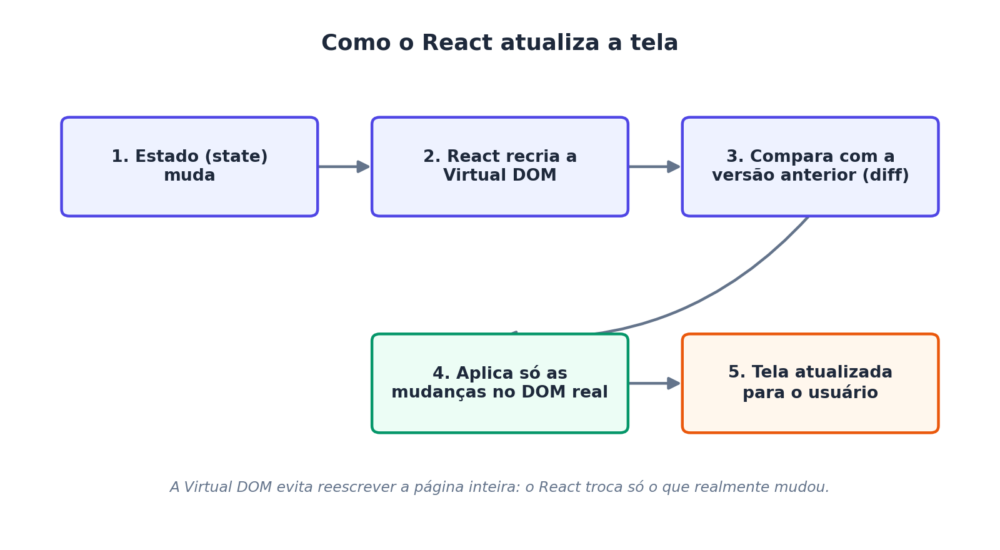
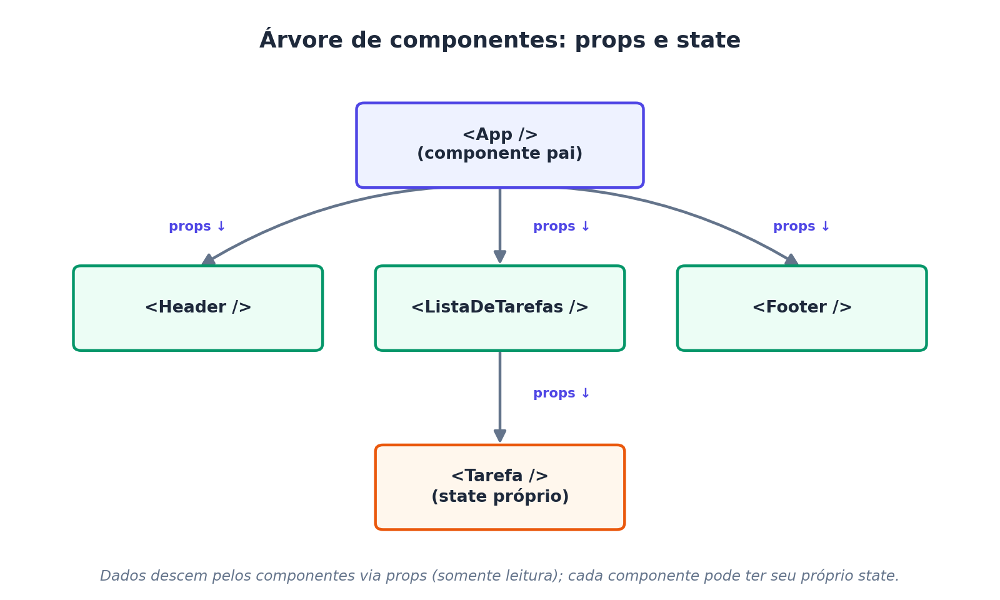
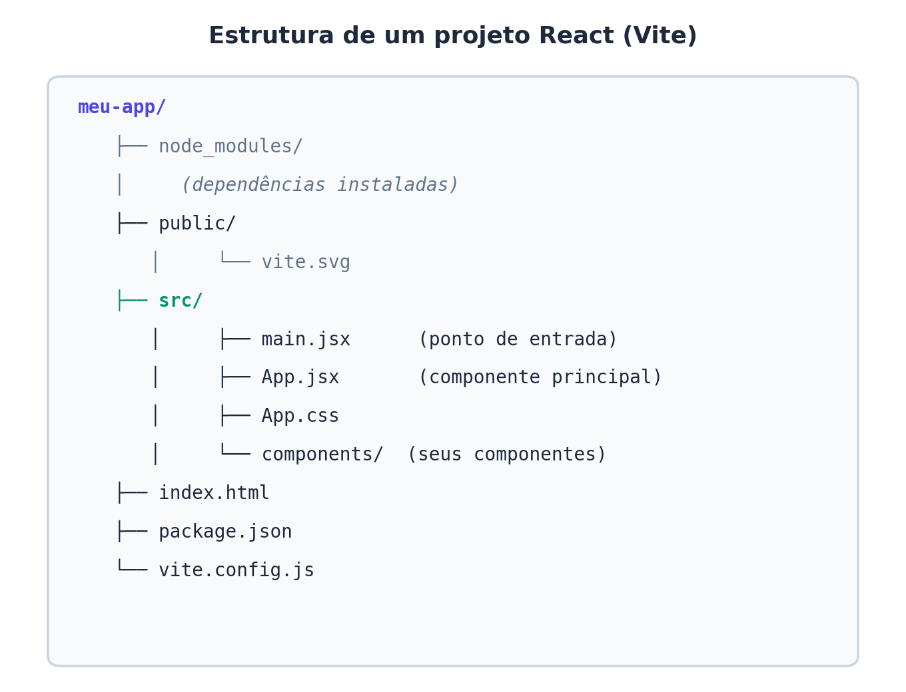

Capítulo 2 React - Quick start
Referências:
- W3Schools React Tutorial — Introduction, Get Started, Start a New React App
- Documentação oficial — react.dev/learn
Objetivos
Ao final desta leitura, você deve ser capaz de:
- Explicar o que é o React e por que ele é usado no desenvolvimento web moderno.
- Entender os conceitos de componente, JSX, props e state.
- Criar um projeto React do zero usando o Vite e entender o papel de cada arquivo gerado.
- Executar, parar e reiniciar o servidor de desenvolvimento com segurança.
- Construir e renderizar um primeiro componente funcional.
2.1 O que é o React?
React é uma biblioteca JavaScript de código aberto, mantida pela Meta, usada para construir interfaces de usuário (UI), especialmente para aplicações de página única (Single Page Applications — SPA).
Diferente de um framework completo, o React cuida apenas da camada de visualização (a “V” do padrão MVC). Ele se integra facilmente com outras bibliotecas (roteamento, gerenciamento de estado global, requisições HTTP), o que o torna flexível para diferentes arquiteturas de projeto.
2.1.1 Por que o React é tão usado?
| Motivo | Explicação |
|---|---|
| Componentização | A interface é dividida em pequenas peças reutilizáveis (componentes), o que organiza e facilita a manutenção do código. |
| Virtual DOM | O React mantém uma representação em memória da interface e atualiza o DOM real de forma otimizada, só onde houve mudança. |
| Declarativo | Descrevemos como a interface deve parecer para cada estado da aplicação, e o React se encarrega de atualizar a tela. |
| Ecossistema maduro | Grande comunidade, muitas bibliotecas complementares (React Router, Redux, Zustand, etc.) e forte demanda no mercado de trabalho. |
| Reutilização entre plataformas | Conceitos e boa parte do código podem ser aproveitados em React Native para aplicativos mobile. |
Ver Tabela 2.1.
2.1.2 Como o React atualiza a tela (Virtual DOM)
Manipular o DOM real do navegador diretamente é uma operação custosa. O React resolve isso mantendo uma cópia leve da interface em memória (a Virtual DOM) e comparando versões antes de tocar o DOM real, conforme ilustrado na Figura 2.1.

2.2 JSX: misturando HTML e JavaScript
JSX (JavaScript XML) é uma extensão de sintaxe que permite escrever elementos parecidos com HTML dentro do código JavaScript. O navegador não entende JSX diretamente — ferramentas de build (o Vite, usando o compilador esbuild/Babel) convertem o JSX em chamadas React.createElement() antes da execução.
Isso é equivalente, “por baixo dos panos”, a:
2.2.1 Regras importantes do JSX
- Todo componente deve retornar um único elemento raiz (ou usar um Fragment
<>...</>). - Atributos HTML usam camelCase:
classviraclassName,onclickviraonClick. - Expressões JavaScript são inseridas entre chaves
{ }:
- Tags devem ser sempre fechadas, inclusive as que não têm par no HTML:
<img />,<br />.
2.3 Componentes
Um componente é uma função (ou, historicamente, uma classe) que retorna JSX descrevendo um pedaço da interface. É a unidade fundamental de reutilização no React.
function BemVindo() {
return <h2>Bem-vindo(a) à disciplina de Programação Web Full Stack!</h2>;
}
export default BemVindo;Componentes podem ser combinados como peças de Lego, formando uma árvore de componentes: um componente pai renderiza outros componentes filhos, passando dados para eles.
2.3.1 Props e State
- Props (properties): dados enviados de um componente pai para um componente filho. São somente leitura — o filho não pode alterá-las diretamente.
- State: dados internos e mutáveis de um componente, controlados pelo próprio componente (por meio do hook
useState). Quando o state muda, o React re-renderiza o componente automaticamente.
import { useState } from 'react';
function Contador() {
const [contagem, setContagem] = useState(0);
return (
<div>
<p>Você clicou {contagem} vezes</p>
<button onClick={() => setContagem(contagem + 1)}>
Clique aqui
</button>
</div>
);
}A Figura 2.2 mostra como as props descem pela árvore de componentes e como o state pode ser local a um componente.

2.4 Criando o primeiro projeto React
A forma recomendada atualmente pela documentação oficial (react.dev) é usar uma ferramenta de build moderna, como o Vite, em vez do antigo create-react-app (hoje descontinuado).
2.4.1 Pré-requisitos
- Node.js instalado (versão LTS recomendada) — inclui o
npm. - Um editor de código (recomendado: VS Code).
2.4.2 Passo a passo
# 1. Criar o projeto
npm create vite@latest meu-app -- --template react
# 2. Entrar na pasta do projeto
cd meu-app
# 3. Instalar as dependências
npm install
# 4. Rodar o servidor de desenvolvimento
npm run devApós o último comando, o terminal exibirá um endereço local (geralmente http://localhost:5173). Basta abri-lo no navegador para ver a aplicação React rodando.
2.4.3 Estrutura de pastas gerada
A Figura 2.3 mostra a estrutura de pastas criada automaticamente pelo Vite ao gerar um projeto React.

Os arquivos mais importantes para o dia a dia de desenvolvimento são:
src/main.jsx: ponto de entrada da aplicação; “monta” o componenteAppdentro doindex.html.src/App.jsx: componente principal, geralmente o ponto de partida da interface.src/components/: pasta (a ser criada pelo próprio desenvolvedor) para organizar os demais componentes.
As próximas quatro subseções respondem, em mais detalhe, perguntas comuns de quem está vendo o React (e o Vite) pela primeira vez.
2.4.4 O que é o Vite e como ele funciona?
Vite (pronuncia-se “vit”, do francês para “rápido”) é uma ferramenta de build e um servidor de desenvolvimento para projetos front-end. Ele não é exclusivo do React — também funciona com Vue, Svelte, JavaScript puro, etc. — mas é a opção recomendada pela documentação oficial do React para começar um novo projeto.
O Vite resolve um problema antigo das ferramentas de build (como o Webpack, usado pelo antigo create-react-app): antes de o servidor de desenvolvimento ficar pronto, essas ferramentas precisavam “empacotar” (bundle) toda a aplicação de uma vez, o que ficava cada vez mais lento à medida que o projeto crescia.
O Vite funciona em duas etapas bem distintas:
- Durante o desenvolvimento (
npm run dev): o Vite não empacota a aplicação inteira. Ele sobe um servidor local que serve os arquivos usando módulos ES nativos do navegador (import/export), transformando cada arquivo sob demanda, só quando o navegador o solicita. Isso torna a inicialização do servidor quase instantânea, mesmo em projetos grandes. Dependências de terceiros (como o próprioreactereact-dom) são pré-otimizadas uma única vez com uma ferramenta chamada esbuild, escrita em Go e muito mais rápida que ferramentas baseadas em JavaScript. - Durante a build de produção (
npm run build): para gerar os arquivos finais que serão publicados em um servidor, o Vite usa o Rollup por baixo dos panos para empacotar, minificar e otimizar todo o código em poucos arquivos estáticos (HTML, CSS e JavaScript), prontos para produção.
Além disso, o Vite oferece Hot Module Replacement (HMR): quando você salva uma alteração em um componente, apenas aquele módulo é atualizado no navegador — sem recarregar a página inteira e, na maioria dos casos, sem perder o state atual da aplicação (por exemplo, o valor de um contador continua o mesmo após a atualização).
Para pensar: pense no Vite como o “motor” que (a) serve os arquivos do projeto durante o desenvolvimento, atualizando a tela quase instantaneamente a cada
Ctrl+S, e (b) empacota tudo de forma otimizada quando o projeto está pronto para ir ao ar.
2.4.5 Onde é definido o arquivo de início do projeto?
Uma dúvida comum é: “quando eu rodo npm run dev, qual arquivo é executado primeiro?” A resposta envolve três arquivos que trabalham em conjunto:
index.html(raiz do projeto) — é o ponto de entrada real de qualquer aplicação Vite, e não um arquivo JavaScript. O Vite trata oindex.htmlcomo o arquivo inicial e procura, dentro dele, uma tag<script type="module">apontando para o JavaScript da aplicação:
<!doctype html>
<html lang="pt-br">
<head>
<meta charset="UTF-8" />
<title>Meu App React</title>
</head>
<body>
<div id="root"></div>
<script type="module" src="/src/main.jsx"></script>
</body>
</html>src/main.jsx— é o arquivo referenciado pelo<script>acima. É o padrão definido automaticamente pelo templatereactdo Vite, e é ele quem efetivamente “liga” o React à página, procurando o elemento<div id="root">doindex.htmle renderizando o componenteAppdentro dele:
import { StrictMode } from 'react';
import { createRoot } from 'react-dom/client';
import App from './App.jsx';
import './index.css';
createRoot(document.getElementById('root')).render(
<StrictMode>
<App />
</StrictMode>,
);src/App.jsx— é o componente importado pormain.jsx. Na prática, é onde a maior parte do código da aula é escrita.
Ou seja: index.html → carrega main.jsx → que renderiza App.jsx → que pode importar quantos outros componentes forem necessários.
2.4.5.1 Como alterar o arquivo de entrada?
O padrão (src/main.jsx sendo carregado por index.html) pode ser alterado de duas formas, caso o projeto precise de outra organização:
- Trocando o
srcdo<script>noindex.html. Por exemplo, para renomear o ponto de entrada parasrc/app.jsx(ou outro caminho), basta editar a linha<script type="module" src="/src/main.jsx"></script>para o novo caminho desejado. - Configurando o arquivo
vite.config.js, usado para casos mais avançados (por exemplo, projetos com múltiplas páginas HTML de entrada), por meio da opçãobuild.rollupOptions.input. Para a maioria dos projetos didáticos, não é necessário mexer aqui — o padrão gerado automaticamente já é o recomendado.
Para testar: renomeie
src/main.jsxparasrc/index.jsx, atualize osrcnoindex.htmlpara/src/index.jsxe rodenpm run devnovamente. A aplicação deve continuar funcionando normalmente — isso ajuda a fixar que o nome do arquivo em si não é “mágico”, é apenas o caminho referenciado noindex.htmlque importa.
2.4.6 Conteúdo dos arquivos gerados automaticamente
Quando o comando npm create vite@latest termina, vários arquivos e pastas já vêm prontos. A Tabela 2.2 resume a função de cada um.
| Arquivo / pasta | O que contém | Deve ser editado na aula? |
|---|---|---|
index.html |
HTML mínimo da aplicação; contém a <div id="root"> onde o React será “encaixado” e o <script> que carrega main.jsx. |
Raramente (apenas título da página, favicon, meta tags). |
src/main.jsx |
Ponto de entrada em JavaScript; importa React, ReactDOM e o componente App, e manda renderizá-lo dentro da <div id="root">. |
Raramente. |
src/App.jsx |
Componente principal da aplicação; é o “coração” do projeto e o arquivo mais editado durante a aula. | Sim, o tempo todo. |
src/App.css |
Estilos CSS específicos do componente App. |
Sim, ao estilizar a interface. |
src/index.css |
Estilos CSS globais, aplicados à aplicação inteira (reset de margens, fontes padrão, etc.). | Ocasionalmente. |
src/assets/ |
Pasta para imagens e outros arquivos estáticos importados diretamente no código JavaScript/JSX. | Sim, ao adicionar imagens. |
public/ |
Arquivos estáticos servidos “como estão”, sem passar pelo processo de build (ex.: favicon). Diferente de src/assets, nada aqui é processado pelo Vite. |
Ocasionalmente. |
package.json |
“Ficha técnica” do projeto: nome, versão, lista de dependências (react, react-dom, vite, etc.) e os scripts disponíveis (dev, build, preview, lint). |
Sim, ao instalar novas bibliotecas. |
package-lock.json |
Registra as versões exatas de cada dependência instalada, garantindo que todos os integrantes da equipe usem as mesmas versões. | Nunca editar manualmente. |
vite.config.js |
Arquivo de configuração do Vite (plugins, alias de caminhos, opções de build). O template React já vem com o plugin @vitejs/plugin-react configurado. |
Raramente, em projetos introdutórios. |
node_modules/ |
Todas as dependências baixadas pelo npm install. Pasta pesada e gerada automaticamente — nunca deve ser editada nem enviada ao controle de versão (Git). |
Nunca. |
.gitignore |
Lista de arquivos/pastas que o Git deve ignorar (por exemplo, node_modules/ e arquivos de build). |
Ocasionalmente, para adicionar novas exceções. |
O arquivo package.json merece atenção especial, pois é nele que os scripts executados pelo npm são definidos:
{
"scripts": {
"dev": "vite",
"build": "vite build",
"lint": "eslint .",
"preview": "vite preview"
}
}Quando digitamos npm run dev no terminal, o npm simplesmente procura a chave "dev" dentro de "scripts" e executa o comando associado a ela (vite, que sobe o servidor de desenvolvimento). É por isso que o nome do comando (dev) é uma convenção do template, e não uma palavra reservada do npm — o package.json poderia, em tese, renomeá-lo para outra coisa, mas a comunidade React/Vite mantém dev, build e preview como padrão em praticamente todos os projetos.
2.4.7 Executando, parando e reiniciando o projeto
Uma dúvida frequente em aula é: “depois de fechar o terminal ou o VS Code, como eu volto a rodar o projeto? npm run dev é sempre a opção certa?”
A Tabela 2.3 resume os comandos disponíveis por padrão e quando usar cada um.
| Comando | O que faz | Quando usar |
|---|---|---|
npm run dev |
Sobe o servidor de desenvolvimento do Vite, com Hot Module Replacement (HMR) e recarregamento automático a cada alteração salva. | Sim — é a opção correta durante o desenvolvimento e para as aulas/atividades práticas. É o comando que você vai usar quase o tempo todo. |
npm run build |
Gera a versão otimizada para produção (arquivos minificados) na pasta dist/. |
Apenas quando o projeto estiver pronto para ser publicado/hospedado. |
npm run preview |
Sobe um servidor local simples servindo os arquivos já otimizados da pasta dist/, para conferir como a aplicação ficará em produção. |
Para testar a build de produção antes de publicar. |
2.4.7.1 Como parar o servidor
Com o terminal focado na janela onde npm run dev está rodando, basta pressionar:
Ctrl + CIsso encerra o processo do Vite e libera a porta (geralmente 5173) que estava em uso. O prompt do terminal volta a ficar disponível para novos comandos.
2.4.7.2 Como rodar novamente
Depois de parar o servidor (ou de reabrir o projeto em outro dia), não é necessário repetir npm install nem recriar o projeto — essa etapa só é preciso refazer se a pasta node_modules/ tiver sido apagada ou se o projeto for aberto em um computador novo. O fluxo normal é:
# 1. Entrar na pasta do projeto (se ainda não estiver nela)
cd meu-app
# 2. (Só é necessário se node_modules/ não existir ou estiver desatualizado)
npm install
# 3. Rodar o servidor de desenvolvimento novamente
npm run devOu seja: sim, npm run dev é a melhor opção para parar e retomar o trabalho durante o desenvolvimento — é rápido (o Vite não precisa reconstruir a aplicação inteira) e já vem com o HMR ativado, que é o que torna produtivo editar componentes e ver o resultado quase instantaneamente no navegador.
Atenção: se o terminal for fechado sem usar
Ctrl + C(por exemplo, fechando a janela diretamente), o processo do Vite pode continuar rodando “preso” na porta5173. Nesse caso, ao rodarnpm run devnovamente, o Vite normalmente detecta a porta ocupada e sobe automaticamente em outra porta livre (ex.:5174), avisando isso no terminal.
2.4.7.3 Como testar se está tudo funcionando
- Rode
npm run devno terminal, dentro da pasta do projeto. - Copie o endereço mostrado no terminal (algo como
➜ Local: http://localhost:5173/) e abra-o no navegador. - A página deve exibir o conteúdo atual de
src/App.jsx. - Com o servidor ainda rodando, edite um texto em
src/App.jsx, salve o arquivo (Ctrl + S) e observe a página no navegador: ela deve atualizar sozinha, sem precisar apertar F5 — esse é o efeito do Hot Module Replacement descrito na Seção 2.4.4. - Se a página não abrir, confira no terminal se não houve nenhuma mensagem de erro (em vermelho) — geralmente indica um problema de sintaxe no JSX.
2.5 Primeiro componente na prática
Edite o arquivo src/App.jsx com o conteúdo abaixo:
import { useState } from 'react';
import './App.css';
function App() {
const [nome] = useState('Turma de Full Stack');
return (
<div className="App">
<h1>Meu primeiro app em React</h1>
<p>Olá, {nome}! Este componente foi criado durante a aula de introdução ao React.</p>
</div>
);
}
export default App;Salve o arquivo e observe o navegador: como o servidor do Vite está com hot reload ativado (ver Seção 2.4.4), a página é atualizada automaticamente a cada alteração salva, sem a necessidade de reiniciar npm run dev.
2.6 Atividade prática
- Criar um novo projeto React com Vite, seguindo o passo a passo da seção “Criando o primeiro projeto React”.
- Identificar, no próprio projeto criado, os arquivos
index.html,src/main.jsxesrc/App.jsx, relacionando-os com a explicação da Seção 2.4.5. - Criar um componente chamado
CartaoAlunoque recebe via props o nome e a matrícula de um(a) estudante e exibe essas informações em um cartão estilizado. - Renderizar três instâncias de
CartaoAlunodentro do componenteApp, cada uma com dados diferentes. - Parar o servidor com
Ctrl + Ce executá-lo novamente comnpm run dev, confirmando que o projeto volta a funcionar sem precisar denpm install. - Desafio extra: adicionar um
useStatepara controlar um contador de “curtidas” em cada cartão, com um botão que incrementa o valor ao ser clicado.
2.7 Resumo dos conceitos-chave
| Conceito | Definição resumida |
|---|---|
| React | Biblioteca JavaScript para construção de interfaces baseadas em componentes. |
| JSX | Sintaxe que mistura HTML e JavaScript, convertida em código JS pelo compilador do Vite. |
| Componente | Função que retorna JSX; unidade reutilizável de interface. |
| Props | Dados somente leitura passados de um componente pai para um filho. |
| State | Dados internos e mutáveis de um componente, gerenciados com useState. |
| Virtual DOM | Representação em memória da interface, usada para otimizar atualizações no DOM real. |
| Vite | Ferramenta de build e servidor de desenvolvimento usada para criar e rodar projetos React localmente, com HMR e build otimizada via Rollup. |
index.html / main.jsx |
Par de arquivos que formam o ponto de entrada da aplicação: o HTML carrega o script, que renderiza o componente App. |
npm run dev |
Comando padrão para iniciar (ou reiniciar) o servidor de desenvolvimento durante toda a fase de construção do projeto. |
2.8 Para saber mais (leitura complementar)
- Documentação oficial: react.dev/learn
- W3Schools React Tutorial: w3schools.com/react
- Documentação oficial do Vite: vitejs.dev